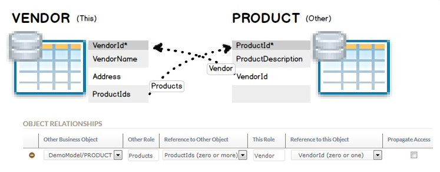
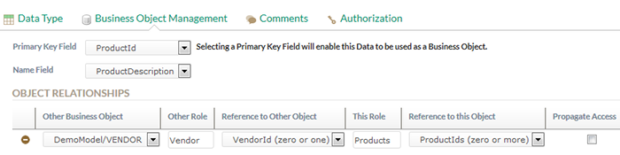
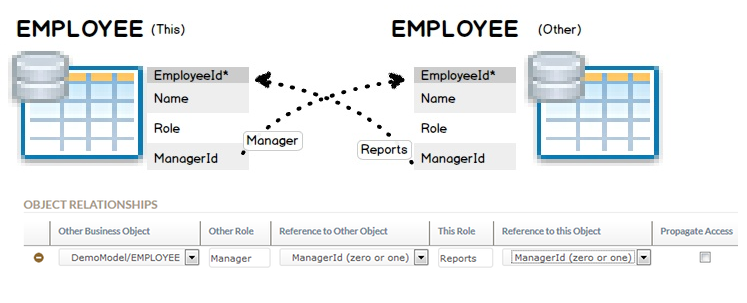

Stardust provides the usage of Business Objects to support a business object-centric view on Process Data. Functionality is available to search for Business Objects, find corresponding Process Instances and update or create Business Objects independently of processes creating Process Data.
In many cases you might intend to access process information via the business objects the processes are working on, for example:
In Stardust these objects are mostly Process Data (e.g. named Claim, Order, Trade, Fund, Fund Group) of a specific structured data type (e.g. Claim, Order, Trade, Fund) whose values or instances are stored in the structured_data_value table of the audit trail.
Using Stardust Business Objects simplifies the management of this data by encapsulating it.
Using business objects to manage data has the following advantages:
A Stardust Business Object serves as virtual database pointing to data. It is defined via a structured data with a specified primary key and optionally a relationship to other business objects.
One Business Object per model version is supported via a particular ID.
A Business Object Instance represents the runtime of a Business Object.
Different processes store independent process data, referring to the same business object via a Primary Key, e.g. Member Id, Fund Name. Thus, an implicit version history of the Business Object is created. The latest version could be considered the "current state of a Business Object as known to Stardust".
You can define relationships between the in-scope Business Object and another Business Object. These Business Objects then have a bidirectional connection. Arbitrary Business Objects can be connected to arbitrary other Business Objects.
For a relationship you enter fields to serve as foreign keys to other Business Objects. You have to option to name such a relationship.
The following relationship rules apply:
Stardust Business Objects Management allows you to search for Business Objects, find corresponding Process Instances and even update and/or create Business Objects independently of Processes creating Process Data.
Business Objects an be created and managed in the Stardust Portal.
Business Object data can be used in several components in the Stardust Portal, e.g. for:
You can mark process data of structured type as Business Objects. A primary key out of the top-level data of the structured data type can be defined, which allows to identify the Business Object in the Modeling perspective.
The Primary Key should be the data that makes the Business Object unique.
For details on marking process data as Business Object, please refer to chapter Specifying Structured Data as Business Object of the Business Process Modeling Handbook.
If you like to change the structured data type fields referenced by already existing Business Objects, you have to take in account which operations are supported to avoid data loss. The following table displays which operations are supported, not supported or are supported for specific scenarios:
| Use Case | Supported | Comment |
|---|---|---|
| Changing the Primary Key | No | Changing the name of the Primary Key field is not supported. |
| Changing a Foreign Key (Referenced Object field) | No | Changing the name of the Referenced Object(s) field is not supported. |
| Renaming a field | No | Renaming a field is equivalent with deleting the field and creating a new one. All the data in the field will
be lost! As a workaround for changing field names you could do the following:
|
| Adding a field | Yes | |
| Deleting a field | Yes | |
| Re-ordering fields in the Business Object (Structured Type) | Yes | |
| Changing the field type | Partly | Supported in scenarios where type conversion is possible |
| Changing the cardinality of a field | Partly | You can change a single object field to a list |
| Changing properties of a field | Yes |
The Stardust Portal provides a view in the Control Center perspective to manage Business Objects. It allows to:
For details on this view, please refer to chapter Managing Business Objects in the Stardust Portal documentation.
Visibility to Business Objects is controlled by Authorizations on the according Structured Data.
Users cannot see information about Business Object Instances for which they do not have a Department grant. Business Objects that a user does not have a department grant for, are not visible to him in the following Portal Views:
When setting up a Business Object relationship, you can determine if department grants for Read Data Values
and Modify Data Values permissions should be transferred to the related Business Object instances.
If this option is selected, department grants are propagated over Business Object relationship hierarchies, as for
example in the following use case:
Consider two Business Objects, Fund and Fund Group that are related to each other.
The following table shows the visibility based on scoped and unscoped roles:
| Fund-to-Fund Group Propagate Access | Fund Group-to-Fund Propagate Access | BOI Visibility for user having Permission only on Fund via unscoped participant | BOI Visibility for user having Permission only on Fund Group via unscoped participant | BOI Visibility for user having Permission only on Fund via scoped participant | BOI Visibility for user having Permission only on Fund Group via scoped participant |
|---|---|---|---|---|---|
| No | No |
|
|
|
|
| No | Yes |
|
|
|
|
| Yes | No |
|
|
|
|
| Yes | Yes |
|
|
|
|
Please refer to section Visibility Restrictions of Business Object Instances depending on Department Grants of chapter Managing Business Objects for end user examples.
This sections provides examples for using Business Objects in Stardust.
The following examples describe how to establish different kinds of relationships between Business Objects. For a more detailed description on how to set up these relationship examples in the Stardust Portal, please refer to section Defining Business Object Relationships of chapter Specifying Structured Data as Business Object in the Business Process Modeling Handbook.
In this example, a relationship is established between two Business Objects VENDOR and PRODUCT. These Business Objects have the following settings:
Zero ore more)To set up a relationship between the two Business Objects, we create the following references for the VENDOR Business Object:
The following graphic shows the setup of references from the VENDOR Business Object.

Figure: Standard Example for Business Object Relationship
A reciprocal relationship is automatically created for the PRODUCT Business Object, which can be seen from the PRODUCT Structured Data > Business Object Management tab.

Figure: Reciprocal Relationship
In this example, a recursive relationship is established for the EMPLOYEE relationship where:
The following graphic shows the recursive relationship for the VENDOR Business Object.

Figure: Recursive Relationship Example